Designing for career decisions, not career discovery.
CareerVerse is a career decision-support product that helps young professionals compare the career paths they are already considering using personal context, transparent reasoning, and real-world trade-offs.
I designed the AI behaviour around context, intent, corrections, uncertainty and guardrails, not just generated answers. The conversation is part of the product.
Product problemToo much information, not enough decision confidence. Aditi already has career options in mind. She needs help comparing what she would actually trade off between them.
Young professionals do not need more career recommendations. They need a trusted way to compare the career options they are already seriously considering, using their own context, transparent reasoning and real-world trade-offs.
Below is the full story, with the reasons behind each decision.
After another workday in Bengaluru, Aditi sits down to think about her next career move. She is a 26-year-old graphic designer with three years of experience and has already narrowed her options to UX Design, Product Management and Data Analytics.
She searches Google for salary trends, watches YouTube transition stories, checks LinkedIn hiring trends, reads Reddit, asks ChatGPT to compare the options and talks to mentors, friends and family. She also keeps her own comparison notes around salary, learning effort, market demand, work-life balance and growth.
Her frustration is not that information is unavailable. It is that information is scattered, conflicting and often disconnected from her financial responsibilities, family expectations and lifestyle. She worries about spending months on the wrong path and wants confidence in the decision, not another generic recommendation.
"I've already narrowed it down to three career options. I don't need another recommendation. I need someone to help me understand what I'm actually trading off between them so I can make the right decision."
That became the gap I designed for: young professionals need a trusted way to compare the career options they are already seriously considering.
Young professionals do not need more career recommendations. They need a trusted way to compare the career options they are already seriously considering.
Current platforms recommend careers, sell counselling or courses, or provide fragmented information. None consistently combine personal context, transparent reasoning and structured trade-off comparisons in one decision-support experience.
These are the working artefacts behind the findings above, so the evidence trail is visible instead of asking you to take the conclusions on faith.
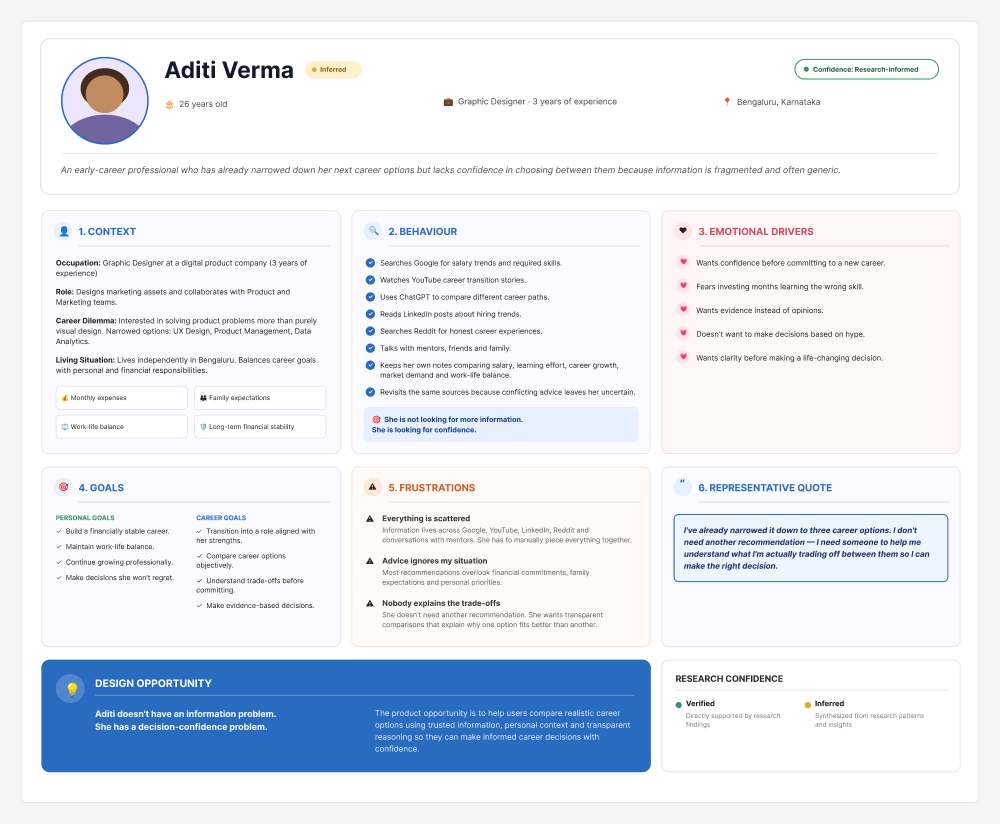
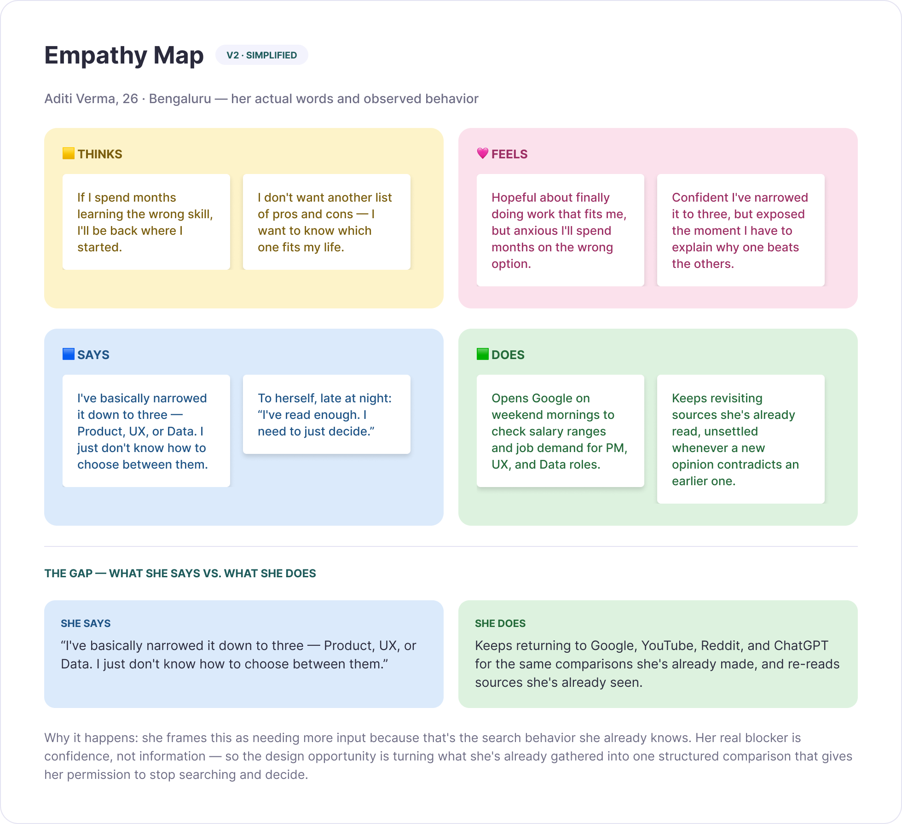
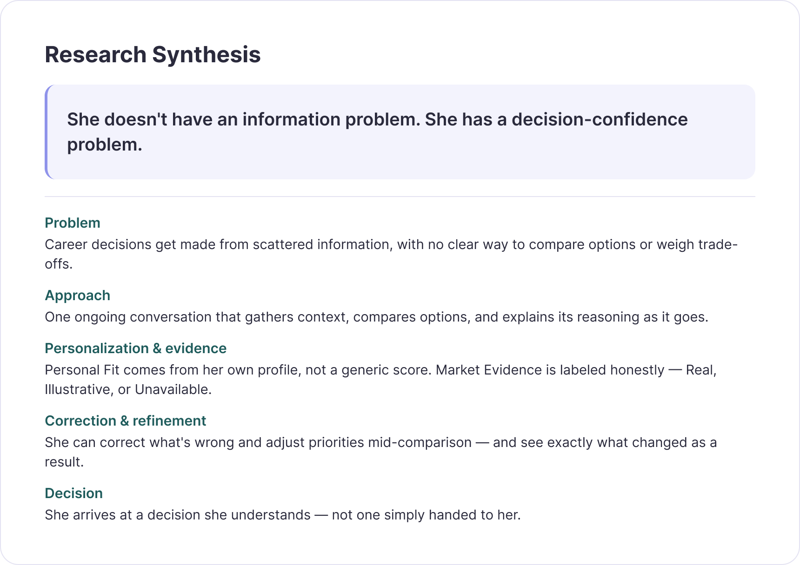
Other tools help people discover careers. CareerVerse helps them compare the ones they're already considering.
Eight steps, each ending in a decision that shaped what came next.
Before any polished UI: how the user moves through the product, and how the system builds context step by step.
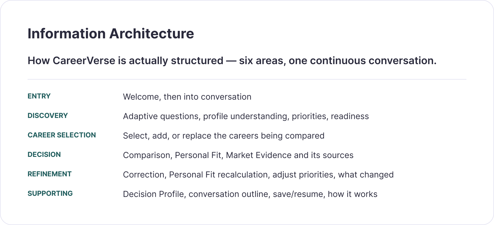
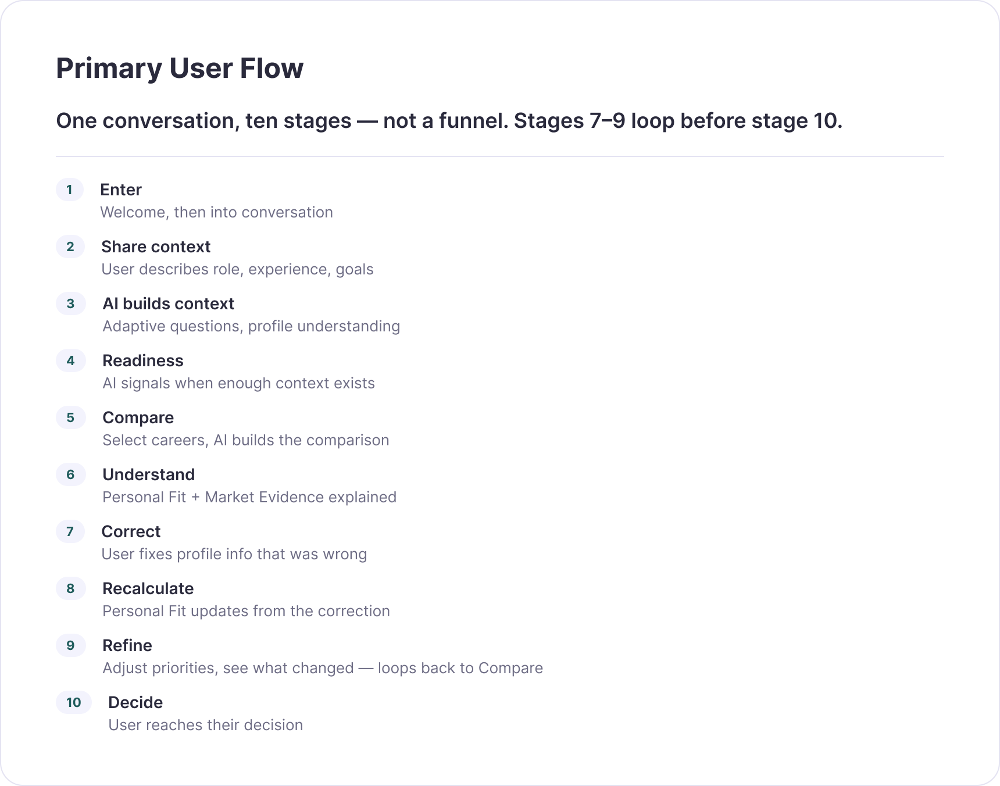
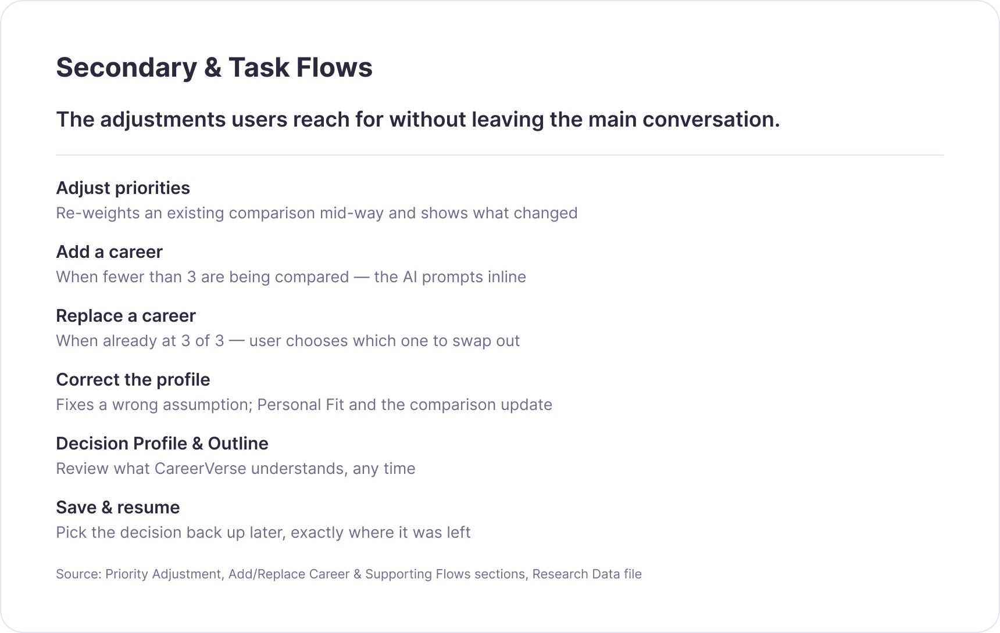
The visuals are the evidence; the reasoning is the narrative. Every artefact led to a design decision.
I didn't add AI after designing the interface. I designed how the AI should behave: it needed to understand what the user had already shared, ask only when information was missing, keep context, respond to corrections and explain results without changing the calculated Personal Fit.
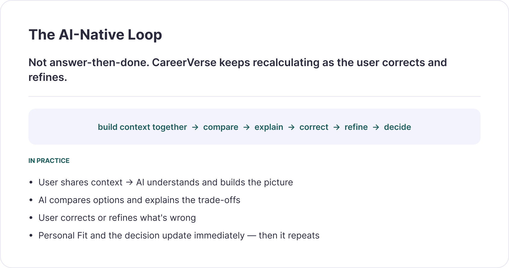
When I tested failure cases, I also added career normalisation, so "UX Designer" and "UX Design" resolve to the same career, while ambiguous terms such as "PM" and "BA" stay unmapped rather than guessed.
The AI talks, asks and explains. The product calculates. Users can always tell which is which.
Each decision traded a little AI freedom for a lot of user trust.
I ran the Round 1 study in Maze. The exported report shows 6 website-test responses; the opinion scale received 5 responses with an average usefulness score of 3.4/5. The report does not show a Task 1 success or misclick rate, so I have not invented one.
It provide the data instantly without hustle
The whole conversation didn't felt personalized it was more of a general suggestion that is applicable to any person or field
Speed wasn't the problem. Feeling personal was.
Real screens, not mockups. Every image below is a live capture from the actual CareerVerse build (a mock-data MVP). The "before" comparison screen predates the Add/Replace feature; the "after" screens were captured by scripting the real conversation.
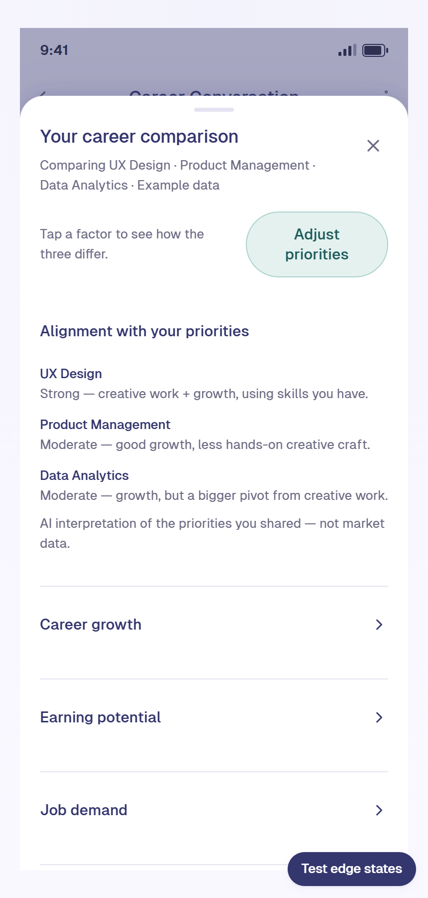
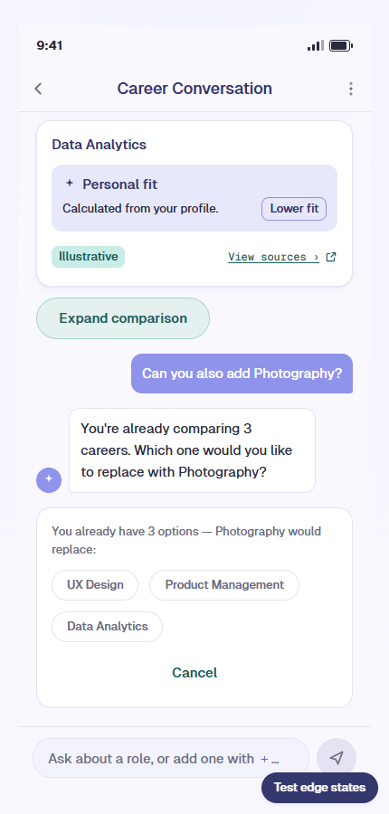
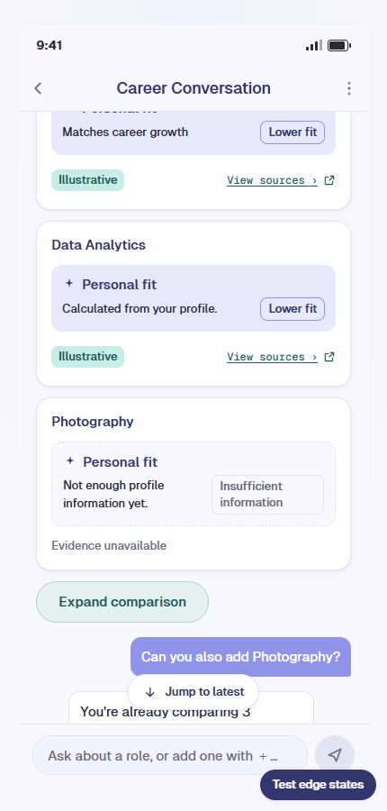
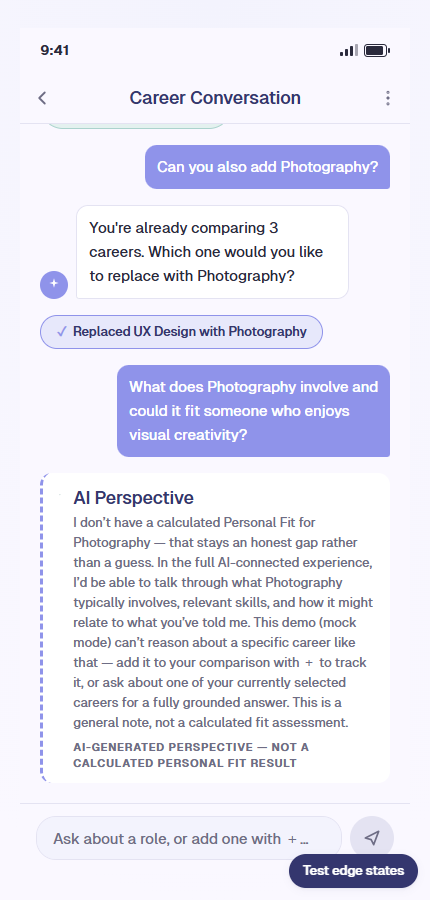
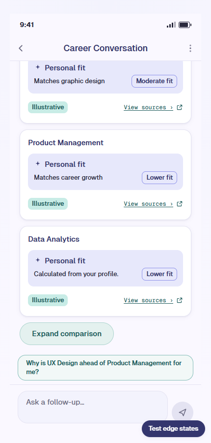
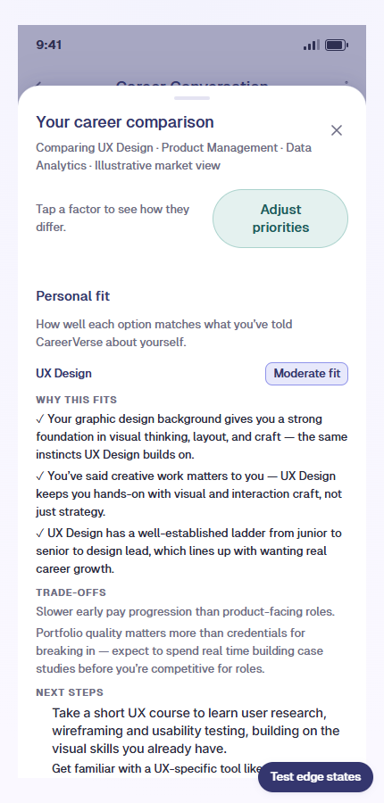
Each change came straight from a test finding, and each one is visible in the real build.
What surprised me most was that the hardest problem wasn't helping someone discover a career. It was helping them make sense of the trade-offs between options they were already considering.
"I didn't just integrate AI into CareerVerse. I designed the AI's behaviour as part of the product experience."
The interface determines what users can do; conversation design determines how CareerVerse responds when they do it.